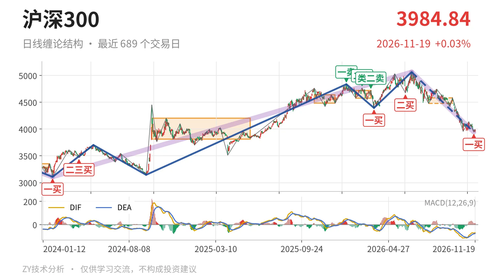
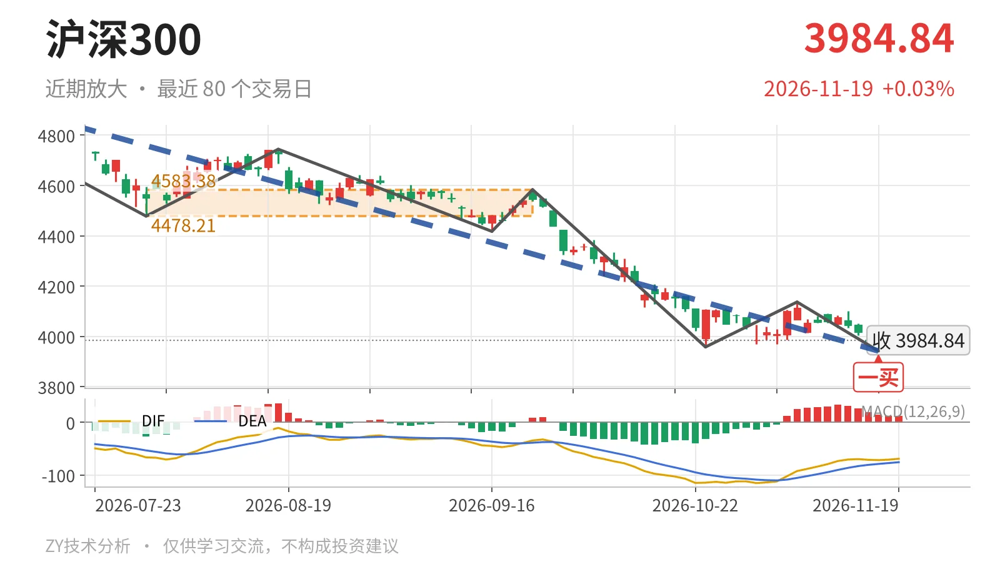

沪深300｜日线下破4478中枢，一买被新低降级

最近日线中枢 4478.21—4583.38点，收盘位于中枢之下
一句话：日线下跌段延续，反弹未回4478点前结构偏弱。
🧭 走势结构：大级别仍属回调，日线下跌段延续
当前结构仍可看作2024年2月2日至2026年6月23日上涨段之后的调整。该上涨段从3108.35点涨至5064.27点，上涨约63%，至今没有被反向线段终结。6月23日以来的日线下跌段由5064.27点开始，11月17日低点为3942.38点，11月18日至19日又小幅刷新至3937.75点，说明这段下跌没有结束。该下跌段内部已有7笔，累计跌约22.2%，力度尚未出现线段级扭转；1月13日一卖、2月25日二卖、3月17日类二卖一个比一个低，但之后6月23日高点5064.27点创出新高，所以这些卖点只落在日线笔内，未终结更大级别上行。

🧮 中枢与位置：跌破最近笔中枢，回到大中枢内部
最新收盘3984.84点已跌破最近一个日线笔中枢（7月30日至9月22日，区间4478.21—4583.38点），距离下沿约493点。此前笔中枢从2月3日至3月17日的4578.21—4720.86点下移至7月30日至9月22日的4478.21—4583.38点，当前再失守下沿，中枢下移未被扭转。价格回到2024年10月8日至2025年5月30日大中枢（3812.32—4200.91点）内部，略低于中轴4006.61点，属于大中枢内偏弱区。
🎯 买卖点与背驰：一买被新低降级
11月17日曾出现日线一买（盘整背驰），位置3942.38点。该买点来自11月5日至11月17日下跌笔对9月22日至10月23日下跌笔的对比：价格低点从3958.14点小幅下移至3942.38点，但绿柱面积由494缩至0，DIF低点由-115.1抬升至-92.5，属于“新低不新弱”。不过11月18日至19日最低3937.75点已跌破该买点，因此这个一买无法维持日线级别，只对应更小级别买点。该下跌笔虽已结束，其后两根K线尚未成笔，背驰比较暂时不能扩展到线段级。

🔍 关键位置观察：反抽不回4478点则偏弱
上方4478点是7月30日至9月22日中枢下沿，反弹若回不到该线之上，对最近中枢而言结构上构成三卖。上方4200点一带对应大中枢上沿，若重新站上，当前下跌更可能只是中枢扩展。下方3942点若继续失守并成笔，6月23日以来的下跌段延续；再下方3812点一线是大中枢下沿，跌破后要考验更早的中枢结构。
📊 结构判断：偏弱，弱在反弹未回中枢
结构偏弱，弱在价格已跌破最近笔中枢下沿4478点，且反弹尚未回到该线上方。最新MACD柱为13.0，虽已翻红，但DIF为-69.2、DEA为-75.7，都在零轴下方，只能先按下跌段里的反抽处理。当前仍处大中枢内，因此不是加速下跌段，而是日线下跌段延续中的弱势震荡。
⚠️ 本文为基于公开行情数据的缠论技术结构记录，由程序自动计算并生成，仅供学习交流，不构成任何投资建议。市场有风险，投资需谨慎。